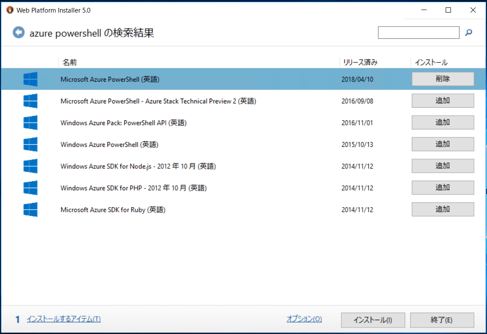
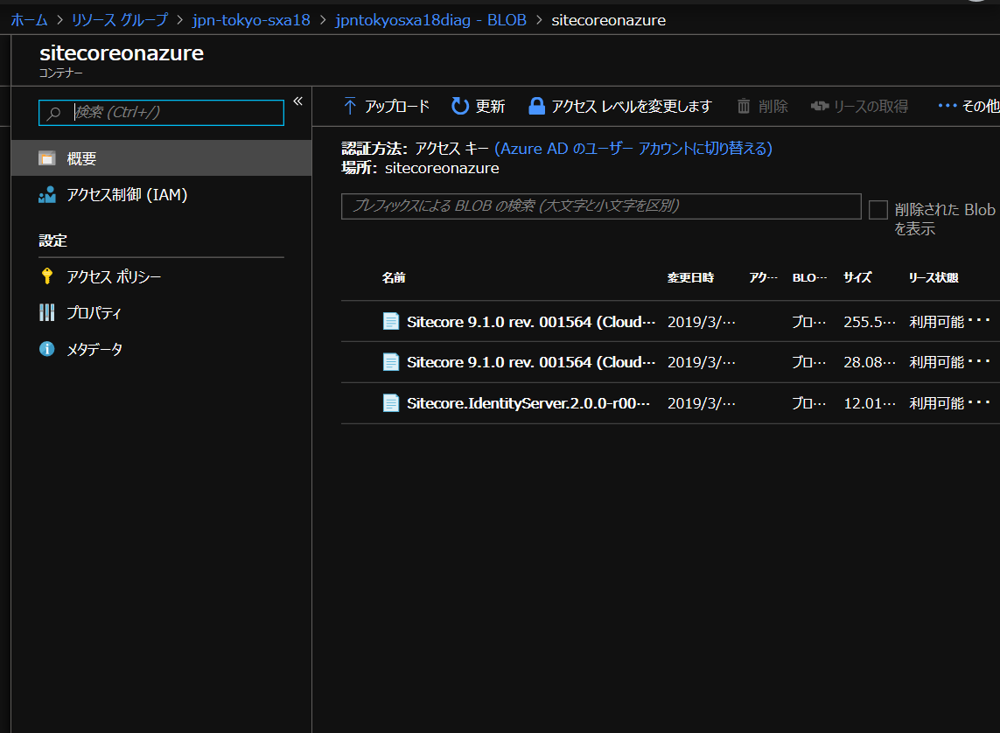

3.1. Sitecore Azure Toolkit¶
Sitecore は Microsoft Azure の PaaS に対応しており、展開方法としては Marketplace および Azure Toolkit を利用した展開ができるようになっています。ここでは Azure Toolkit を利用して展開する手順に関してまとめています。詳細に関しては、このページの一番下にある参考サイトをご覧ください。
3.1.1. 展開をするにあたって準備するもの¶
以下のモジュールをダウンロードしてください。
Sample Powershell Script に関しては、README.md の中に含まれているためファイルではないため、新たに ps1 のファイルを作成してください。
注釈
本文書は Sitecore Experience Platform 9.1 Initial Release をベースに紹介をしています。
3.1.2. テンプレートのダウンロード¶
Github で公開されている Sitecore-Azure-Quickstart-Templates のクローンを作成します。クローンの作成先は今回は以下のフォルダとします。
C:\projects\Sitecore-Azure-Quickstart-Templates
3.1.3. Microsoft Azure Powershell のインストール¶
Web Platform Installer を利用して Microsoft Azure Powershell をインストールします。
{kind=link}
Web Deploy 3.6 for Hosting Service も併せてインストールしてください。
3.1.4. Sitecore Azure Toolkit の展開¶
ダウンロードをした Sitecore Azure Toolkit を以下のフォルダに展開します。
C:\projects\sitecoeronazure
展開した後のファイル構成は以下のようになっています。
Windows PowerShell
Copyright (C) 2016 Microsoft Corporation. All rights reserved.
PS C:\Users\Administrator> cd \projects\sitecoreonazure
PS C:\projects\sitecoreonazure> dir
ディレクトリ: C:\projects\sitecoreonazure
Mode LastWriteTime Length Name
---- ------------- ------ ----
d----- 2019/03/29 10:04 Copyrights
d----- 2019/03/29 10:04 resources
d----- 2019/03/29 10:04 tools
------ 2018/10/23 9:44 3109 README.txt
------ 2018/10/23 9:44 22528 SitecoreLicense.html
------ 2018/10/23 9:49 1220 version.txt
PS C:\projects\sitecoreonazure>
続いて、Import-Module .toolsSitecore.Cloud.Cmdlets.psm1 -Verbose のコマンドを実行します。
PS C:\projects\sitecoreonazure> Import-Module .\tools\Sitecore.Cloud.Cmdlets.psm1 -Verbose
詳細: パス 'C:\projects\sitecoreonazure\tools\Sitecore.Cloud.Cmdlets.psm1' からモジュールを読み込んでいます。
詳細: コマンドレット 'New-SCCargoPayload' をインポートしています。
詳細: 関数 'ConvertTo-SitecoreWebDeployPackage' をインポートしています。
詳細: 関数 'Set-SitecoreAzureTemplates' をインポートしています。
詳細: 関数 'Start-SitecoreAzureDeployment' をインポートしています。
詳細: 関数 'Start-SitecoreAzureModulePackaging' をインポートしています。
詳細: 関数 'Start-SitecoreAzurePackaging' をインポートしています。
PS C:\projects\sitecoreonazure>
これでツールの準備ができました。
3.1.5. ファイルの準備¶
以下のファイルを C:\projects\sitecoreonazure のフォルダに準備してください。
ライセンスファイル
証明書
証明書がない場合は、 自己証明書の作成手順 を参考にしていただくとよいですが、参考の PowerShell のスクリプトはこのリポジトリでも提供しています。
実行するとパスワードを聞いてきますので、パスワードを設定して証明書のファイルを作成してください。
続いて Azure の Blob にすでにダウンロード済のファイルを展開して、アップロードをします。
3.1.6. 実行ファイル、パラメーターの設定¶
展開のスクリプトファイル deploy91.ps1 に関して、以下のパラメーターを変更してください。
# Specify the parameters for the deployment
$ArmTemplateUrl = "https://raw.githubusercontent.com/Sitecore/Sitecore-Azure-Quickstart-Templates/master/Sitecore%209.1.0/XPSingle/azuredeploy.json"
$ArmParametersPath = ".\azuredeploy.parameters.json"
$licenseFilePath = ".\license.xml"
# Specify the certificate file path and password if you want to deploy Sitecore 9.0 XP or XDB configurations
$certificateFilePath = "C:\projects\sitecoreonazure\sitecoreonazuredemo.pfx"
$certificatePassword = "qwer1234"
$certificateBlob = $null
$Name = "jpn-tokyo-sitecore-deploy910"
$location = "JAPAN WEST"
$AzureSubscriptionId = ""
パラメーター |
内容 |
|---|---|
$ArmTemplateUrl |
標準のセットアップを考えているため、Github にある展開ファイルを設定 |
$ArmParametersPath |
Github からダウンロードした対象となるパラメーターファイル |
$licenseFilePath |
ライセンスファイルのパスを設定 |
$certificateFilePath |
証明書のファイルのパス |
$certificatePassword |
上記の証明書のパスワード |
$Name |
展開するリソースグループ名 |
$location |
展開するデータセンター名 |
$AzureSubscriptionI |
Azure Subscription の ID |
続いてパラメータファイルを設定しますが、 azuredeploy.parameters.json には Azure のストレージ、Blob にアップロードしているパッケージの URL を指定してください。
パラメーター |
内容 |
|---|---|
location |
展開するデータセンター（ Japan West ) |
sitecoreAdminPassword |
管理者パスワード |
sqlServerLogin |
SQL Server ログイン名 |
sqlServerPassword |
SQL Server ログインパスワード |
siMsDeployPackageUrl |
Sitecore Identity Server のパッケージ URL |
singleMsDeployPackageUrl |
Sitecore のパッケージ URL |
xcSingleMsDeployPackageUrl |
Sitecore xConnect のパッケージ URL |
なお、Sitecore のパッケージに関してはダウンロードした上で、Azure のストレージに展開をしてください。
{kind=link}
アップしたファイルの URL を上記のように設定する形です。
3.1.7. 展開を実行する¶
上記のように準備した後、あとはスクリプトを実行するのみです。まずは Powershell のコンソールから Azure にログインを実行します。
PS C:\projects\sitecoreonazure> Add-AzureRmAccount
続いて作成したスクリプトを実行すれば完了となります。
PS C:\projects\sitecoreonazure> .\deploy91.ps1
上記の設定がすべてクリアできていれば、40分ほどで展開が完了します。